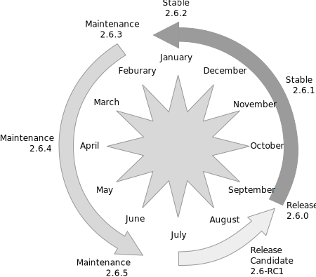

GeoServer releases on a six month cycle providing short turn around time for new features.
Each GeoServer release is supported with bug fixes for a year, with releases made approximately every two months. This allows for an overlap between supported releases allowing organisations a chance to migrate without undue pressure.
If your organisation is making use of a GeoServer version that is no longer in use by the community all is not lost. You can volunteer on the developer list to make additional releases.
Please see the wiki GeoTools and GeoServer release schedule for specific versions, or to volunteer to help make a release.
Our issue tracker has a New Feature for roadmap ideas seeking appropriate resourcing (people/funding).
If you find something you have a specific interest in, or have an idea of your own, let us know and we'll try to make it happen together.